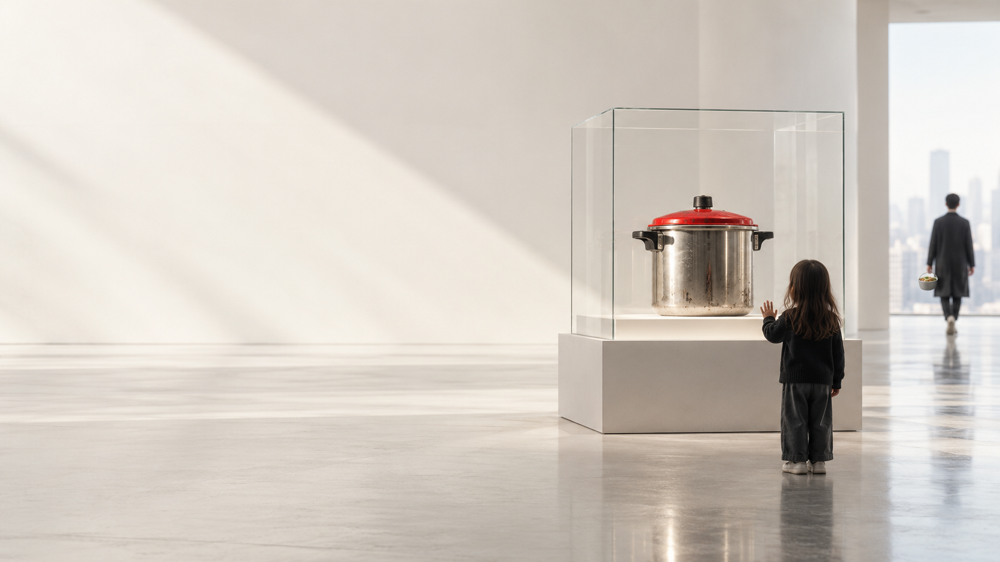

Dorothee Auwärter · LinkedIn · 16. März 2026
«I wonder if he ever imagined what it would look like a century later. And do we today have any real sense of what the world might look like in another 100 years?»
Frau Auwärter, hundert Jahre traue ich mich nicht. Vierzehn schon.

Spekulatives Zukunftsbild · 2040
Wie kommt es dahin? Gehen wir einen Abend im Jahr 2040 durch.
Spekulation · Ein Abend im Jahr 2040
Alles andere gibt es schon.
Heute · 01 / 04
Posha, IFA Berlin, September 2026. Die Kamera sieht, wann Zwiebeln goldbraun sind, weil Pfanne, Kamera und Behälter fest und bekannt sind. Aus einer Stunde Handarbeit werden rund zehn Minuten.
TechTimes, 4.9.2026 · Wikipedia, Posha
Was verschwindet: die Handgriffe.
Heute · 02 / 04
1,5 Millionen Einpersonenhaushalte heute, 1,9 Millionen im Jahr 2055. Dann 40 Prozent aller Haushalte. Für wen kocht man, wenn niemand wartet?
BFS Haushaltsszenarien, in: Die Volkswirtschaft, März 2026 · BFS via NZZ, 2008
Was verschwindet: der Anlass.
Heute · 03 / 04
GLP-1, etwa Ozempic oder Wegovy: 12 Prozent im November 2025, 18 Monate davor die Hälfte. Wenn Hunger einstellbar wird, ändert sich, was eine Mahlzeit ist.
KFF Health Tracking Poll, November 2025
Was kleiner wird: der Hunger.
Heute · 04 / 04
So hat Markus Miele an der IFA 2025 Pasta gekocht. Der Topf misst, das Kochfeld regelt, Nachregulieren entfällt. «Nichts brennt an. Nichts kocht über.» Im Handel seit April 2026.
Gefertigt wird das Kochgeschirr in Rikon.
Die ersten Sensoren im Kochgeschirr: 2015. Auch aus Rikon.
Miele, Medieninformation 2025 · Galaxus, 3.9.2025 · Kuhn Rikon, Meilensteine, Januar 2026
Was verschwindet: die Aufmerksamkeit. Rikon baut daran mit.
Auch heute
Kundenbewertung, Galaxus, März 2026: «Eine Anschaffung für die nächsten 30 Jahre.»
Kuhn Rikon, Duromatic Jubiläum
Ersetzt wird nicht der Topf. Ersetzt wird die Küche um ihn herum.
Vielleicht wird 2040 weniger gekocht. Und Kochen bedeutet mehr.
Ihre Entscheidung
Diesen Weg geht Rikon seit 2015. Das M Sense denkt in Bünde und entsteht in Rikon. Je klüger das System, desto mehr entscheidet es selbst, wofür das Gefäss da ist.
Wer nur A baut, liefert das Gefäss für die Ideen anderer.
Diesen Weg geht der Duromatic seit 1949. Sein Haken steckt in einer Frage, die Ihnen der Zürcher Oberländer im März gestellt hat: «Sie sehen einen Kunden einmal im Leben und dann nie wieder.»
Wer nur B baut, verkauft jedem Menschen genau einmal.
Zürcher Oberländer, 12.3.2026
M Sense für A. Der Duromatic für B. Der einzige Grund, einen 30 Jahre alten Duromatic zu ersetzen, war ein neues Kochfeld. Könnte ein Topf bleiben, und nur das wechseln, was ihn mit der Küche verbindet?
Der Topf bleibt. Die Küche um ihn wechselt.
Den Deckel des HOTPAN Comfort verkauft Kuhn Rikon heute schon einzeln. Als Upgrade. kuhnrikon.com
Ein Gebrauchsgegenstand. «Töpfe sind Töpfe. Pfannen sind Pfannen.» NZZ, August 2025
Das, was eine Maschine kennen muss, um kochen zu können.
Das, was bleiben könnte, wenn Kochfeld, App und Roboter wechseln.
Das, was man in der Hand hält, wenn man kocht, obwohl man nicht muss.
01 · wenn küchen bis 2040 selbst entscheiden, wird kochen von einer pflicht zu einer wahl.
02 · wenn das müssen aus dem kochen verschwindet, wird die pfanne nicht überflüssig. sie wird zur entscheidung.
03 · wenn 2040 jedes essen gelingt, weil ein system dafür sorgt, bleibt eines zu schützen: dass es jemand selbst gemacht hat.
Hundert Jahre Rikon
Kuhn Rikon, Meilensteine aus 100 Jahren · Wikipedia, Kuhn Rikon
Hundert Jahre lang hat Kuhn Rikon das Müssen aus dem Kochen genommen. Was übrig bleibt, ist das Wollen.
Spekulatives Zukunftsbild · 2040
Vielleicht zeigt dieses Bild nicht das Ende des Kochens.
Vielleicht zeigt es den Moment, in dem Kochen aufgehört hat, selbstverständlich zu sein.
Und angefangen hat, eine Entscheidung zu werden.
Wenn 2040 niemand mehr kochen muss: